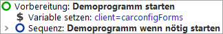
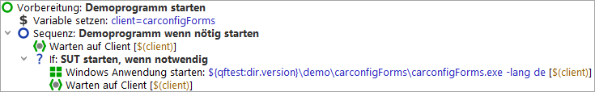

| Version 6.0.3 |
Zuerst wollen wir die Vorbereitung genauer unter die Lupe nehmen:
|
|  | ||
|
| Abbildung 19.3: Der Knoten "Vorbereitung" | ||
Es werden zwei Kindknoten sichtbar:
Lassen Sie uns noch einen kurzen Blick in die Sequenz: Starte Client wenn nötig werfen:
|
|  | ||
|
| Abbildung 19.4: Die Sequenz zum Starten des Client | ||
Zu Beginn steht ein Warten auf Client Knoten, der prüft, ob der Client bereits läuft. Nur wenn dies nicht der Fall ist, wird er gestartet.
Der Windows Client starten Konten führt die Anwendung aus und stellt die
Verbindung zwischen dem Client und QF-Test her. Um unabhängig vom absoluten
Verzeichnispfad der Applikation zu sein, verwenden wir einen relativen Pfad, ausgehend vom
QF-Test Installationsverzeichnis, dass über die Variable ${qftest:dir.version}
angegeben wird (siehe Handbuchkapitel Variablen).
Wir wollen nun die Anwendung wirklich starten:
Während der Ausführung wird der gerade aktive Knoten durch "->" markiert.
Nach Abschluss der Startsequenz sollte die Demoapplikation "CarConfiguratorNet Form" am Bildschirm erscheinen. Da QF-Test nach Ende der Wiedergabe den Fokus zurückerhält, kann die Demoapplikation dadurch auch wieder verdeckt worden sein.
|
|  |
||
|
| Abbildung 19.5: Das Windows CarConfigurator Demo | ||
| Letzte Änderung: 6.9.2022 Copyright © 2002-2022 Quality First Software GmbH |